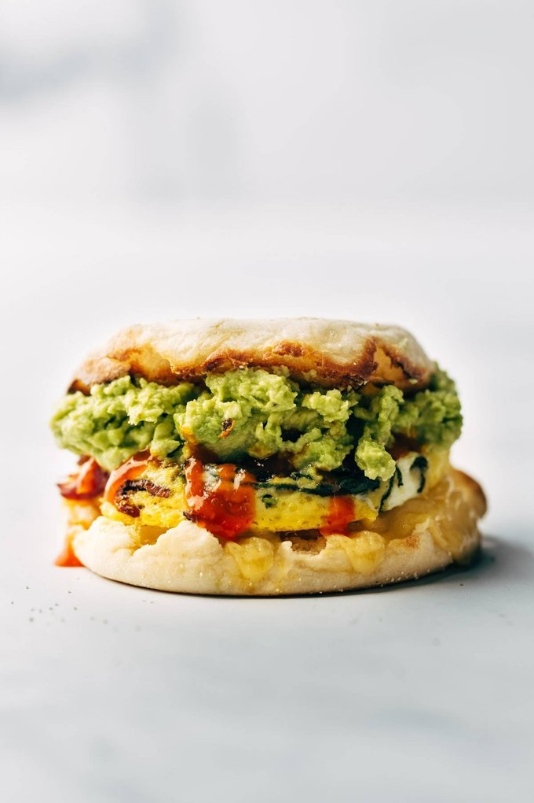

Meal Prep Breakfast Sandwich

Description
Breakfast Sandwiches - meal prep style! Bake up your eggs on a sheet pan with bacon and spinach, tuck them into english muffin with some cheese, and stash them in the freezer for the week. SO GOOD.
Ingredients
- 12 eggs
- 1/4 cup whole milk
- 1 1/2 tablespoons
- 6 slices bacon
- a few handfuls of spinachs
- 12 English Muffins
- Cheese (Optional)
- Butter (Optional)
Steps
- Preheat oven to 300 degrees. Generously oil a rimmed half sheet pan.
- Whisk the eggs, milk, and salt.
- Cut the bacon into small pieces. Fry in a heavy skillet until crispy. Add the spinach and stir until wilted. Using tongs, let excess fat drip off for a few seconds before adding your bacon and spinach to the egg mixture.
- Pour the egg mixture into the oiled half sheet pan (13″ x 18″). Bake for 15 minutes, until just set.
- Remove, cool, and cut into rounds using a wide mason jar lid or round cookie cutter. Spread English muffins with butter (optional) and place an egg round on each one. Add cheese, wrap in foil, and voila.
- Refrigerate (4-5 days) or freeze (no limit, lol). To reheat, you can use the oven, microwave, toaster oven, or some combination of all! See notes.
Back to Main Page